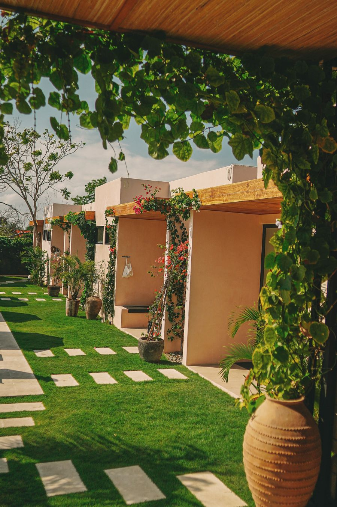
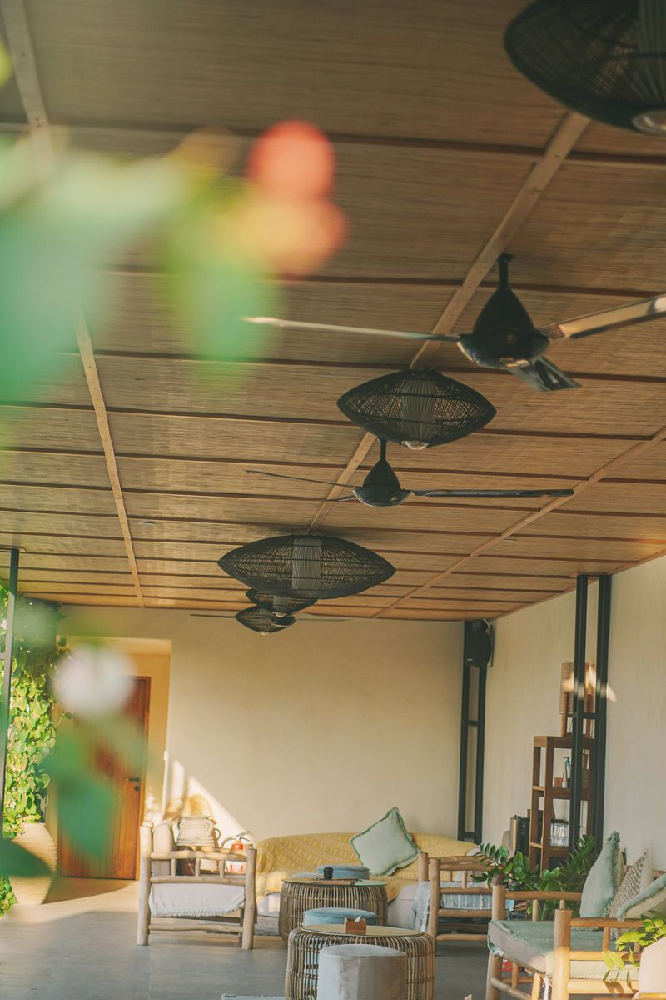
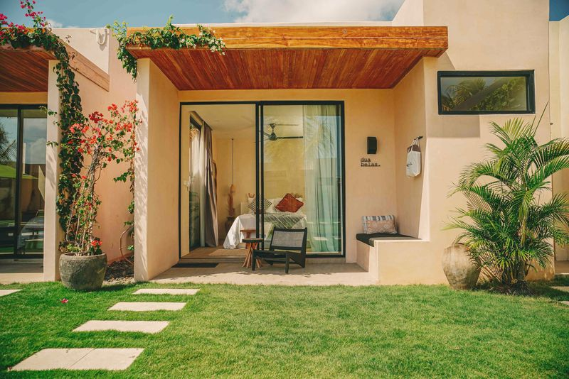
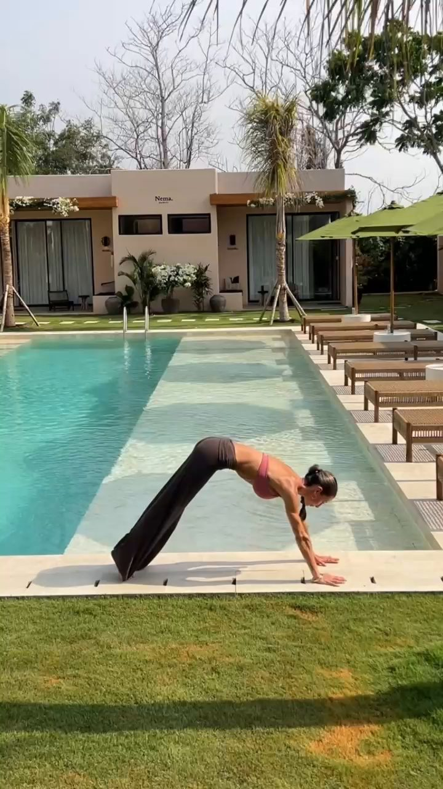

The Nema Journal
Honest, practical guides to Uluwatu, from the people who live here.

Solo Female Travel in Uluwatu: A Local Guide
Where to stay, how to get around and how to enjoy Uluwatu entirely on your own terms.
Read the guide
Uluwatu Without a Scooter: What You Can Walk To
Stay central, walk to the beach and the cafes, and save rides for the sunsets.
Read the guide
How to Choose a Bali Retreat Venue: A Checklist
Twelve things to check before you book a venue for your yoga or wellness retreat.
Read the guide
Uluwatu for Couples: A Slow, Romantic Guide
Date nights, sunsets, slow mornings, and why a small boutique hotel beats a big resort for two.
Read the guideThe Best Sunset Spots in Uluwatu
From the Kecak fire dance to clifftop cocktails: where to be when the sun goes down.
Read the guide
Uluwatu vs Canggu: Which Is Right for You?
Cliffs or rice fields, calm or buzz? An honest comparison of Bali's two favourite bases.
Read the guideThe Best Time to Visit Uluwatu, Month by Month
Dry season, shoulder months and the truth about the rainy season, with the quietest and best-value times to come.
Read the guide
How to Run a More Profitable Retreat in Bali
Off-season dates, school-holiday flight traps and partner discounts: how to protect your margin and your bookings.
Read the guide
Learn to Surf at Thomas Beach, Uluwatu
Uluwatu's friendliest learner wave is a short walk from Nema. When to go, tides, lessons, safety and a simple plan.
Read the guide